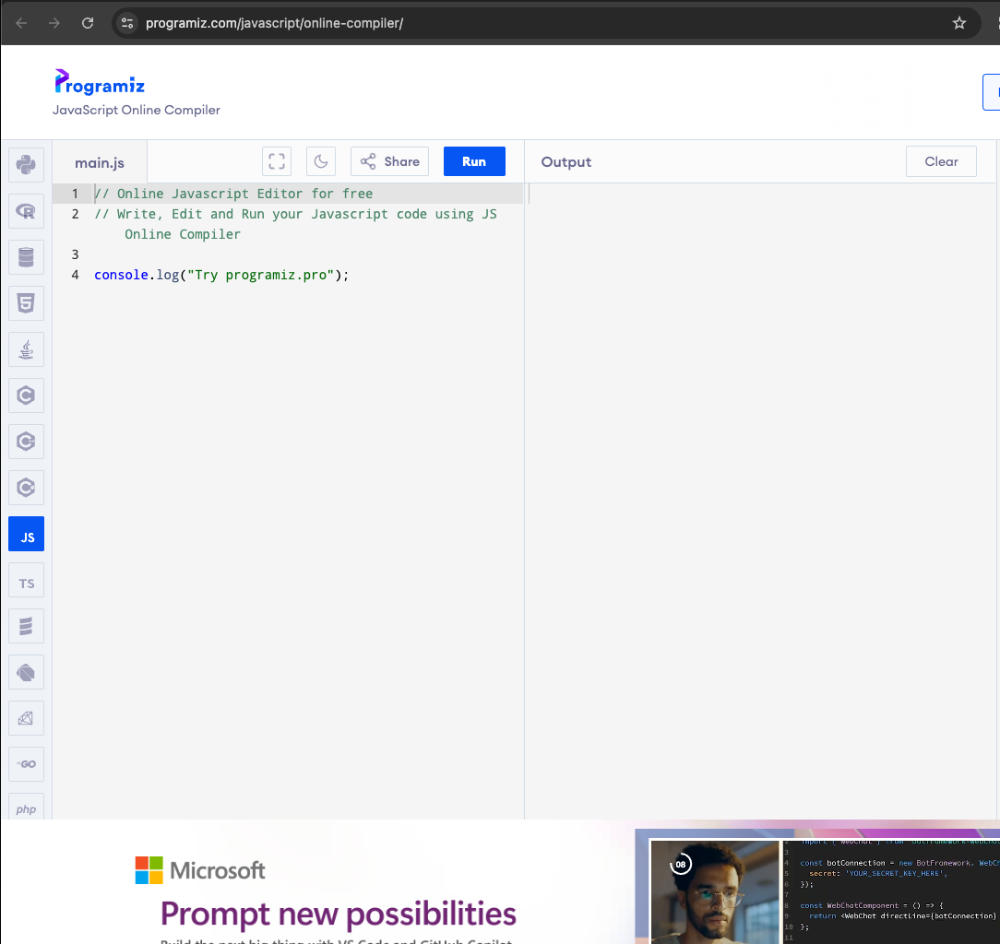

Introduction
This tutorial will cover the basics of computer science, with a focus on HTML and Javascript. I will start with an introduction to some general programming concepts through Javascript, and we can get into HTML after that.
Helpful tools
Prior to beginning, we will download and set up a couple helpful tools. For starters, we will need a place to run our code.
Programiz
This is what I will recommend you use for the sake of this tutorial, as it is an online compiler/interpreter (I will explain these concepts in the next section). Point is, you can write and run code from the web, easy peasy.
HTMLJavascript
Let's begin!
Start by opening up the Javascript interpreter linked above. Now is also an important time to highlight the basics of some programming concepts. For starters, here is an exmaple code sample (you don't have to worry about what it does yet)
// This is a comment! It won't get run when the program runs
let first_var = 2
let second_var = 3
console.log(first_var + second_var) // this prints 5
Some programming languages are whats called compiled languages, while others are called interpreted languages. The main difference is as follows: a compiled language is converted into machine code (1s and 0s) before being run, whereas an interpreted language is turned into 1s and 0s once you start running it (while the program runs). You don't need to worry about this at all right now, just sharing for fun. Javascript (the language you will be using) is an interpreted language, so it will be converted on the fly. This means that in the above code snippet, the computer will run each line one at a time. The lines may look scary, but I promise we'll go slow.
Hello, world!
Hello, world! is typically the first program most people will ever write. Let's jump write in!
Open up the javascript interpreter mentioned earlier.

Here we can see the code area (on the left) and the output (on the right). Let's look through line by line.
The first two lines are called comments. Comments are just helpful messages programmers can leave
that won't be run when the program runs.
The third line is blank. The computer will ignore this line as well, but blank lines can help divide
up your code so it's easier to read.
The fourth line is where the magic happens. Before focusing too much on the syntax of the line, I want
you to think about functions in math. Say you have f(x) = x^2. You could call f your function, and x the argument to that
function. If you pass in x=3, f(3) will return 9, f(4) will return 16, and so on.
This line works in esssentailly the same way.
console.log is a function which will write the input to the terminal. The input (arguments) are passed inside the parentheses.
Change the text inside the parentheses from Try programiz.pro to Hello, world!, then click Run.
You should see the result in the output say Hello, world! now!
Congratulations, you just completed your first program.
Variables
While it's very cool that we can write what we want printed into console.log, it could get extremely tedious if we needed to use the same message over and over again. This is where variables come into play. Delete all the code in the editor, and replace it with the following.
let myVar = "Hello, world!"
console.log(myVar)
This will create a variable which contains the text "Hello, world!", which you can then pass into the console.log method.
If you run this, you should see the same output as before.
Variables can also be changed. Below the let myVar line but above the console.log line, add the following code snippet.
myVar = "Hello, Noah!"
What do you think will be outputted now? Run it to find out.
It's also important to remember that when you create a variable, you will need to use the keyword let, but after that you can just reference it by name.
Variable types
Variables can contain different types of information, from numbers, to text, to a file. Here are some common types below. I will also give some examples of how they are used together.
let myStr = "apple"
myStr = "pizza"
console.log(myStr)
// adding strings together will concatenate the result
myStr = myStr + " is tasty"
console.log(myStr)let myChar = 'a'// integers can use the following operators: +, -, *, /, %
let x = 4
let y = 7
let z = x * y
x = x + 2
y = y - x
console.log(x)
console.log(y)
console.log(z)// bools can use the operators || (or) and && (and).
// You can also compare other types of variables and set the result to a bool.
let myBool = true
let wrong = false
console.log(myBool && wrong)
console.log(myBool || wrong)
// you can use == to check if two values are equal
// or != to check if they differ
myBool = (7 == 9)
console.log(myBool)
myBool = (7 != 9)
console.log(myBool)
// you can also use <, <=, >, and >= to compare if two values are
// less than, less than or equal to, greater than, or greater than or equal to respectively
let myFloat = 1.5
console.log(myFloat * 2.5)
Control flow
In our programs, it normally runs line by line. But what if we want it to repeat certain lines or to skip over others depending on the result of a variable? This is where if statements and loops come into play.if
An if statement will only execute the code inside its curly brackets if the statment inside the parentheses is true. if statements will look like the followingif (condition) {
// execute code inside here
}
// jump straight here if the condition was false
// the program will still reach here even if it does the code inside firstTry writing some code that will make a variable called myVar, set it to a number of your choosing, and if it's greater than 0, print out to the console that it is positive
else
else statements are used if we want some code to run if a condition was not met in an if statement. The syntax looks similar to if statements, where the code to run is surrounded by { and }, but we don't add parentheses or a condition this time. Let's modify the code from the previous section to support this.
let myNum = 7
if (myNum >= 0) {
console.log("myNum is positive!")
}
else {
console.log("myNum is negative!")
}Try changing the value of myNum a few times and running the code to see how the output changes.
else if
else if statements combine the two previous kinds of control flow statements, where they require all previous conditions to have failed, but they still need their own condition to be met. An infinite number of if-else statements can be added after an if statement (but they need an if statement first). Here's an example.
let myNum = 3
if (myNum < 0) {
console.log("myNum is negative")
}
else if (myNum == 0) {
console.log("myNum is zero")
}
else if (myNum == 3) {
console.log("myNum is three")
}
else {
console.log("myNum is positive")
}Change the value of myNum a few times to see how the output changes.
for loops
Now let's say you want to run a similar section of code a set number of times. This is where for loops can be helpful!
The basic structure of for loops looks like this:
for (expression 1; expression 2; expression 3) {
// code to be executed
}
expression 1 is executed once before the loop runs at all. This is often used for variable initialiations.
expression 2 checks a condition, and if true, will run the loop once. The for loop will repeat so long as this condition is true
expression 3This expression will run once at the end of the loop each time the loop runs
Here's an example of how a for loop might work. Let's say we want to run it 10 times.
// i is often used as a "counter" variable in for loops
for (let i = 0; i < 10; i = i + 1) {
console.log("This is iteration " + i)
}while loops
contrary to for loops which often have set amounts of times they will run, while loops will run until their condition is false (and sometimes not at all). Here's the syntax for a while loop
while (expression) {
// execute code
}
an example of how this might look in practice is as follows:
let myVar = 5
while (myVar >= 0) {
console.log("myVar = " + myVar)
myVar = myVar - 1
}
break
Sometimes we will want to break out of and stop a loop early. This is where the break keyword
can help. if we write the line
for (let i = 0; i < 100; i = i + 1) {
console.log("Hello")
if (i == 4) {
break
}
console.log("world")
}
Number guessing game
Using what we've learned so far, we can make a number guessing game! We will just need a few extra methods to use first
Generate a random integer
We can use the Math.random() method to generate a random float between 0 and 1
for (let i = 0; i < 10; i = i + 1) {
console.log(Math.random())
}Making it an integer
if we multiply the result of the Math.random() method by a positive number, and then apply the Math.floor() method, we can effectively generate a random number in the range of [0, number_multiplied)
Let's use this to make a random integer!
// not inclusive
let maxNumber = 10
let randomInt = Math.floor(Math.random() * maxNumber)
console.log(randomInt)Getting input
JavaScript provides a handy method for getting input from the user via the prompt() method.
prompt() works as follows:
with no arguments:
let response = prompt()with an argument:
if you pass an argument into prompt(), the console will print that out first before accepting input.
let response = prompt("Enter a number!\n")Converting input to an int
Unfortunately, prompt() will return a string instead of an integer like we want. If we were to try to compare the result of prompt() with an integer, it would always return false. However, JavaScript provides us a method to do so! We will use the Number() method for this
let myNum = prompt()
console.log(typeof(myNum))
myNum = Number(myNum)
console.log(typeof(myNum))
We can now make a guessing game that will continue until the user correctly guesses the random number.
// using the randomInt code from before
let maxNumber = 10
let randomInt = Math.floor(Math.random() * maxNumber)
let userInput = 0
let playing = true
while (playing) {
userInput = Number(prompt("Enter a number between 0 and " + maxNumber + ":\n"))
if (userInput == randomInt) {
console.log("You guessed the number!")
playing = false
}
else if (userInput > randomInt) {
console.log("Your guess was too high.")
}
else {
console.log("Your guess was too low.")
}
}
Here's an example of what the output should look like when you run it!